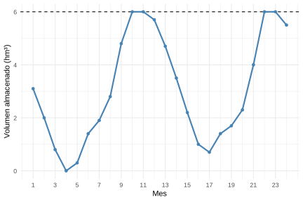
Tema 1
Cuencas hidrográficas y ciclo hidrológico
Presentación de clase basada en el libro Hidrología Aplicada a la Ingeniería Civil
Ing. Edwin Matarrita Segura
Escuela de Ingeniería Civil, Universidad de Costa Rica


Clases del tema
| Clase | Contenido | Capítulos del libro |
|---|---|---|
| 1.1 | La hidrología y el recurso hídrico | 1, 2 |
| 1.2 | Ciclo hidrológico y balance hídrico | 3 |
| 1.3 | La cuenca hidrográfica: delimitación, red y forma | 4 |
| 1.4 | Relieve y pendientes de la cuenca | 4 |
| 1.5 | La atmósfera y la energía del Sol | 5, 6 |
| 1.6 | Estabilidad atmosférica y formación de la lluvia | 6, 7 |
| 1.7 | Circulación atmosférica y clima | 6 |
| 1.8 | Medición de la lluvia y del caudal | 5, 8 |
Cada clase enlaza a su primera diapositiva. El menú de la izquierda (tecla M) lleva a cualquier diapositiva.
1.1 La hidrología y el recurso hídrico
Capítulos 1 y 2 del libro
Qué problema resuelve
¿Cuánta agua hay en un sitio, cuánta puede llegar en una crecida y cuánta puede faltar en una sequía?
- Casi todo estudio hidrológico responde una de esas tres preguntas.
- La primera sirve para planificar acueductos, riego y generación eléctrica.
- La segunda, para dimensionar puentes, alcantarillas, drenajes y diques.
- La tercera, para dimensionar embalses y prever restricciones de uso.
En esta clase: qué estudia la hidrología, quién la aplica en Costa Rica, cuánta agua hay en la Tierra y por qué el agua disponible es mucho menos que el agua que existe.
¿Qué es la hidrología?
- Estudia el agua de la Tierra: dónde está, cómo circula, cómo se distribuye y cómo interactúa con el ambiente y con las personas.
- La hidrología aplicada convierte esos fenómenos en cantidades para diseñar obras y gestionar el recurso.
- Necesitan un estudio hidrológico: drenajes urbanos, puentes y alcantarillas, presas y canales, control de inundaciones, gestión del riesgo.
- Entrega caudales de diseño, tiempos de concentración, hidrogramas, niveles de inundación y volúmenes disponibles.
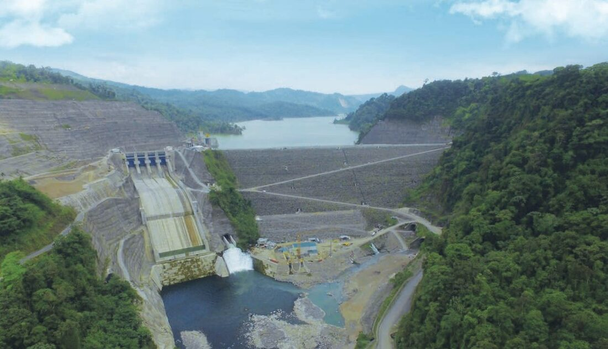
La lluvia de un año no se repite al siguiente: por eso la estadística es una herramienta diaria.
Hidrología en Costa Rica
| Institución | Papel en el agua |
|---|---|
| ICE | Red de lluvia y caudal; estudios para sus plantas hidroeléctricas |
| SENARA | Aguas subterráneas, riego y drenaje |
| AyA | Agua potable y aguas residuales |
| MINAE | Política hídrica y concesiones de agua |
| IMN | Tiempo, clima, pronósticos y avisos |
| CNE | Emergencias hidrometeorológicas y gestión del riesgo |
| Universidades y consultoras | Investigación, formación y estudios de diseño |
También usan información hidrológica el Ministerio de Salud, SETENA y las municipalidades. En lo internacional coordinan la UNESCO, la OMM y ONU-Agua.
El agua en la Tierra
| Reservorio | % del total | % del agua dulce |
|---|---|---|
| Océanos | 96.5 | |
| Hielo polar y glaciares | 1.76 | 69.6 |
| Agua subterránea dulce | 0.76 | 30.1 |
| Lagos dulces | 0.007 | 0.26 |
| Humedad del suelo | 0.0012 | 0.05 |
| Atmósfera | 0.001 | 0.04 |
| Ríos | 0.0002 | 0.006 |
Fuente: Maidment (1993). Solo cerca del 2.5 % del agua es dulce, y casi toda está en hielo y acuíferos.
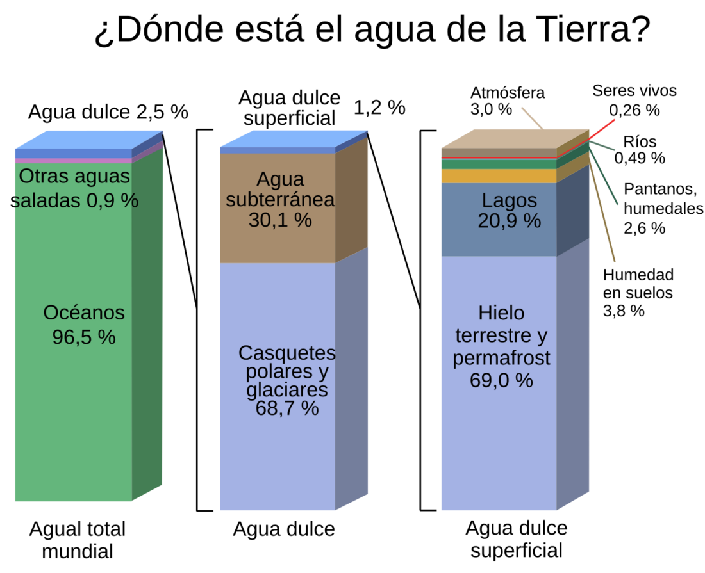
Ejemplo: cuánta agua dulce está en ríos y lagos
Con los volúmenes del libro (km³), calcule qué porcentaje del agua dulce está en lagos dulces, ríos y pantanos, y qué lámina formarían los ríos repartidos sobre los continentes (149 millones de km²).
Solución:
- Agua dulce total: \(91\,000 + 2120 + 11\,470 + 16\,500 + 10\,530\,000 + 1120 + 24\,364\,100 + 12\,900 = 35\,029\,210\) km³.
- Lagos dulces, ríos y pantanos: \(104\,590\) km³, es decir, \(104\,590/35\,029\,210 = 0.30\) %.
- Lámina de los ríos: \(h = 2120/(149 \times 10^6) = 1.42 \times 10^{-5}\) km \(= 14\) mm.
Los ríos abastecen tanto porque su agua se renueva con cada lluvia, no porque guarden mucha.
Explorador: el tamaño de los reservorios
Barras azules: agua dulce. Volúmenes de Maidment (1993).
Recurso, disponibilidad y accesibilidad
- Recurso hídrico: toda el agua de un sistema, se pueda usar o no.
- Disponibilidad: la parte que se puede usar en un lugar y un periodo, según su renovación y las restricciones físicas.
- Accesibilidad: infraestructura, tecnología, costo y marco legal que permiten usarla.
Pacífico Norte: el volumen anual no es bajo, pero la lluvia se concentra en pocos meses y hay poca capacidad de almacenamiento. Resultado: escasez recurrente.
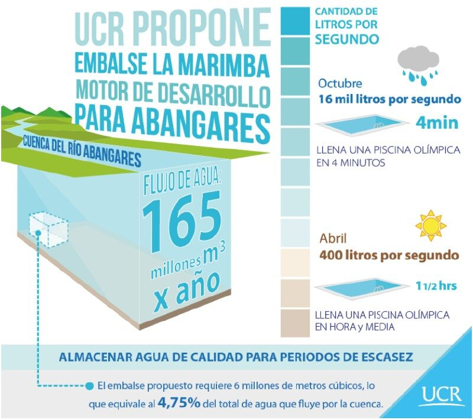
Variabilidad en el tiempo y confiabilidad
- Estacionalidad: la lluvia se concentra en pocos meses.
- Eventos extremos: sequías, tormentas y huracanes como Otto (2016).
- Persistencia: varios años seguidos secos o húmedos, como con El Niño.
Confiabilidad: probabilidad de atender una demanda a lo largo del tiempo. Con ella se dimensionan embalses y captaciones.
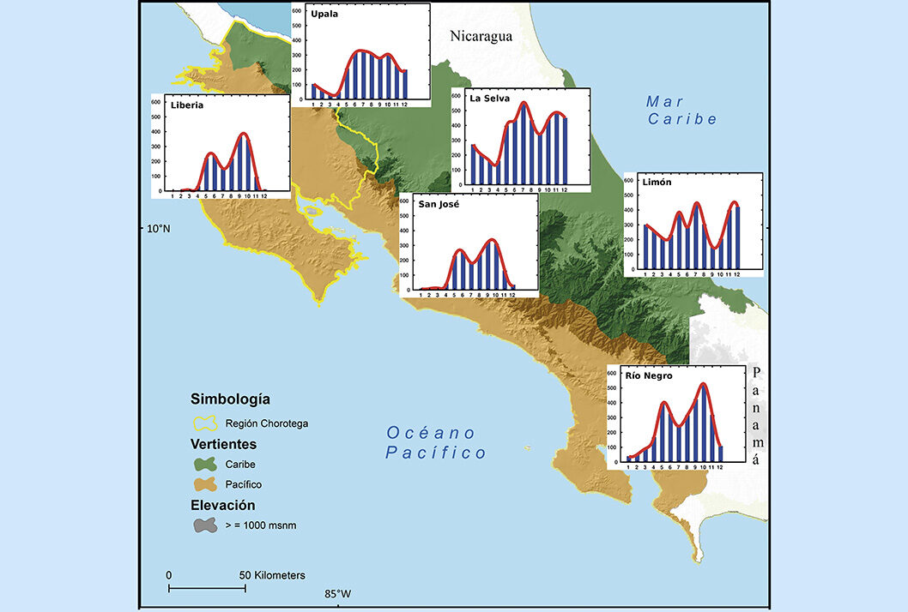
Para practicar
- Con los volúmenes del cuadro, calcule qué fracción del agua dulce está en la atmósfera. Si la atmósfera se renueva cada 8 días, ¿cuántas veces al año se renueva su agua?
- Una ciudad de 400 000 habitantes consume 200 L por persona al día. ¿Qué caudal medio necesita en m³/s? ¿Qué área de cuenca, con 600 mm/año de escorrentía, produce ese volumen?
- Explique con un ejemplo de Costa Rica la diferencia entre disponibilidad y accesibilidad.
- Nombre tres obras de su comunidad que necesitaron un estudio hidrológico y qué pregunta respondió cada uno: cuánta agua hay, cuánta puede llegar o cuánta puede faltar.
Más ejercicios en los capítulos 1 y 2 del libro.
Ideas para llevar
- La hidrología aplicada responde tres preguntas: agua media, crecidas y sequías.
- Solo el 2.5 % del agua es dulce y menos del 0.5 % de ella está en ríos, lagos y pantanos.
- Los ríos guardan poca agua: lo que importa es que se renueva.
- Recurso, disponibilidad y accesibilidad no son sinónimos.
- La variabilidad en el tiempo define la confiabilidad, y con ella se diseñan embalses y captaciones.
1.2 Ciclo hidrológico y balance hídrico
Capítulo 3 del libro
Qué problema resuelve
¿Alcanza un embalse de 6 hm³ para entregar 1.5 hm³ cada mes, si en la época seca casi no le entra agua?
- Todo estudio hidrológico de ingeniería cuantifica una parte del ciclo del agua.
- Ninguno lo modela completo: cada uno escoge los procesos y la escala de tiempo que importan.
- La herramienta común es la conservación de la masa: el balance hídrico.
En esta clase: el ciclo hidrológico, el sistema hidrológico, la ecuación de continuidad y la operación mensual de un embalse.
El ciclo hidrológico
- Circulación continua del agua entre atmósfera, superficie, subsuelo y océanos.
- La mueven la energía solar, que evapora, y la gravedad, que hace caer y escurrir.
- En el suelo el agua se intercepta, escurre, se infiltra, percola y recarga acuíferos.
- La hidrosfera llega a unos 15 km de altura y cerca de 1 km bajo el suelo (Chow et al., 1988).
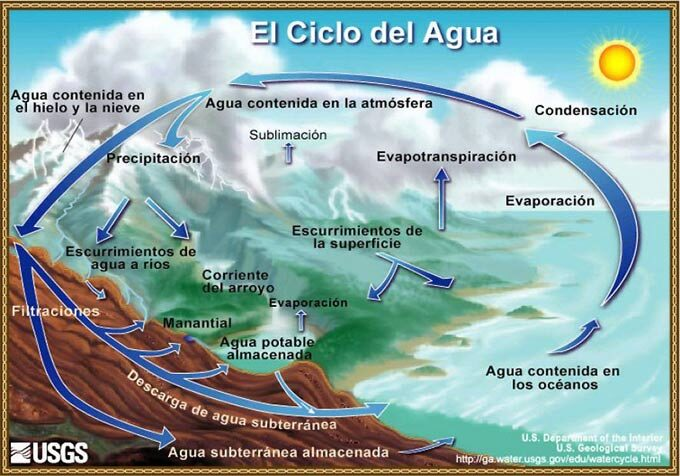
Flujos rápidos y almacenamientos lentos
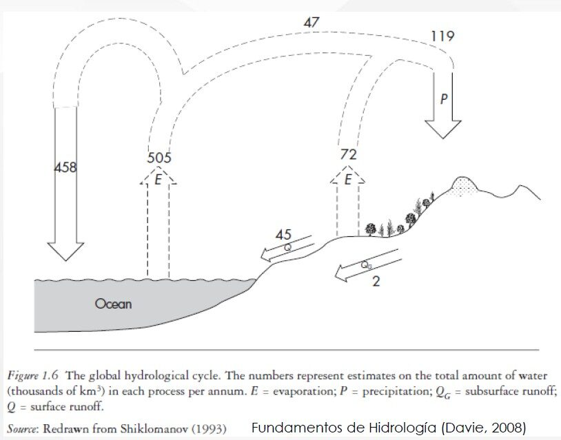
Tiempo de residencia medio (Maidment, 1993):
| Reservorio | Tiempo |
|---|---|
| Atmósfera | 8 días |
| Ríos | 17 días |
| Aguas superficiales | 4 años |
| Océanos | 2650 años |
El agua atmosférica se renueva unas 45 veces al año; por eso, con tan poco volumen, alimenta toda la lluvia.
El sistema hidrológico
- Un volumen limitado por una frontera, con entradas, salidas y almacenamiento.
- La frontera usual es la divisoria de una cuenca.
- Almacenamientos:
- superficial: vegetación, depresiones, lagos y embalses;
- humedad del suelo, en la zona no saturada;
- subterráneo, en los acuíferos.
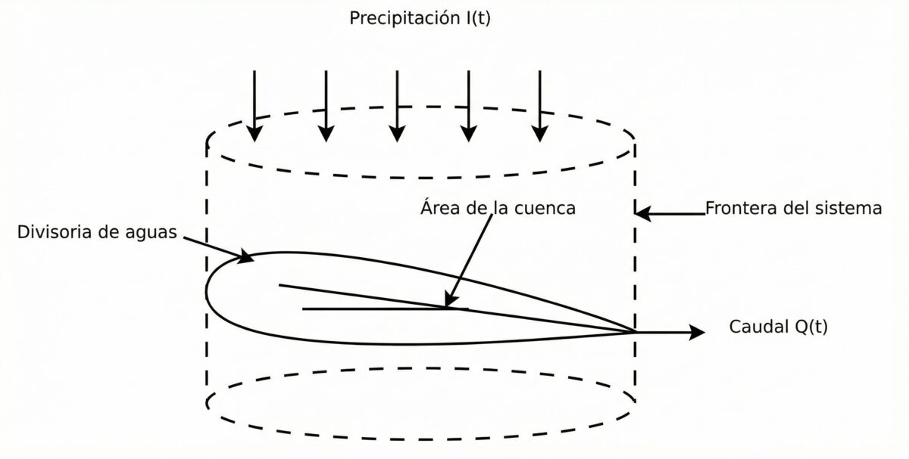
Conservación de la masa
\[ I - O = \Delta S \]
\(I\): volumen que entra en el intervalo; \(O\): volumen que sale; \(\Delta S\): cambio del almacenamiento. En m³ o en mm de lámina sobre la cuenca.
Entradas a una cuenca:
- precipitación;
- aporte subterráneo de cuencas vecinas;
- transvases, como la descarga de una central que capta en otra cuenca.
Salidas:
- caudal en el punto de control;
- evapotranspiración y evaporación;
- infiltración profunda hacia otros acuíferos;
- extracciones y transvases.
1 mm sobre 1 km² son 1000 m³. Con un año hidrológico completo suele suponerse \(\Delta S \approx 0\).
El balance en la operación de un embalse
\[ S_t = S_{t-1} + X_t - Y_t \]
- \(S_t\): volumen al final del intervalo \(t\); \(X_t\): entrada; \(Y_t\): salida (descargas, extracciones y evaporación).
- Dos límites: si \(S_t\) pasa de la capacidad, se vierte el exceso; si queda negativo, falta agua y el embalse queda vacío.
- Confiabilidad: porcentaje de intervalos en que se atendió toda la demanda.
Otros balances de la ingeniería: tránsito de crecientes en cauces y embalses, y explotación sostenible de acuíferos.
Ejemplo: operación mensual de un embalse
Capacidad 6 hm³, demanda 1.5 hm³/mes, 4 hm³ al inicio de enero; entradas hipotéticas de dos años. Sin evaporación.
Solución:
| Mes | Inicial | Entrada | Final | Vertido | Déficit |
|---|---|---|---|---|---|
| 1 | 4.0 | 0.6 | 3.1 | 0 | 0 |
| 2 | 3.1 | 0.4 | 2.0 | 0 | 0 |
| 3 | 2.0 | 0.3 | 0.8 | 0 | 0 |
| 4 | 0.8 | 0.5 | 0 | 0 | 0.2 |
| 10 | 4.8 | 4.0 | 6.0 | 1.3 | 0 |
| 11 | 6.0 | 2.8 | 6.0 | 1.3 | 0 |
Confiabilidad: 95.8 % (23 de 24 meses).
Explorador: operación del embalse
El volumen inicial no puede pasar de la capacidad. Puntos rojos: meses en que el embalse se vació.
Agua virtual
- Volumen de agua dulce usado para producir un bien o un servicio (Allan, 1998).
- Agua verde: lluvia guardada en el suelo y usada por los cultivos.
- Agua azul: extraída de ríos, lagos o acuíferos.
- Agua gris: volumen teórico para diluir los contaminantes hasta cumplir las normas.
| Producto | Agua virtual (L/kg) |
|---|---|
| Trigo | 1827 |
| Carne de res | 15 400 |
Promedios mundiales: trigo, Mekonnen & Hoekstra (2011); carne de res, Mekonnen & Hoekstra (2012). El balance de la cuenca no cambia, pero sí la presión sobre sus fuentes.
Para practicar
- Una cuenca de 250 km² recibe 2800 mm de lluvia al año y en su salida pasan 9.5 m³/s en promedio. Suponga \(\Delta S = 0\) y sin transvases. ¿Cuánta evapotranspiración hay, en mm/año?
- Repita el ejemplo del embalse con 6 hm³ al inicio de enero. ¿Cambia la confiabilidad? ¿Por qué?
- Con el explorador, busque la capacidad mínima que atiende toda la demanda de 1.5 hm³/mes en los dos años con el volumen inicial lleno.
- Una ciudad se abastece con agua traída de otra cuenca y descarga sus aguas residuales en la propia. Escriba el balance de su cuenca y señale el transvase.
Más ejercicios en el capítulo 3 del libro.
Ideas para llevar
- El ciclo lo mueven el Sol y la gravedad; no tiene principio ni fin.
- La atmósfera guarda poca agua pero la renueva en días; los océanos y acuíferos, en siglos o milenios.
- Todo análisis hidrológico aplicado es un balance: \(I - O = \Delta S\), en una frontera y un intervalo definidos.
- En un embalse, el balance mes a mes da el vertido, el déficit y la confiabilidad.
- El resultado depende de la capacidad, de la demanda y del estado inicial.
1.3 La cuenca hidrográfica: delimitación, red y forma
Capítulo 4 del libro
Qué problema resuelve
¿Por qué dos cuencas de la misma área, bajo la misma tormenta, entregan crecidas tan distintas?
- El área define cuánta agua escurre; la forma, la red de drenaje y el relieve, cuándo llega.
- Casi todos los métodos de caudal de diseño piden el área, la longitud del cauce y la pendiente.
- Un error al delimitar la cuenca se arrastra a todo el estudio.
En esta clase: la cuenca y su divisoria, la delimitación, la red de drenaje y los índices de forma.
La cuenca y la divisoria de aguas
- Área delimitada por la topografía que conduce la escorrentía hacia un punto de control.
- El punto de control lo define el estudio: un puente, una captación, una estación de aforo.
- La divisoria une los puntos más altos y corta las curvas de nivel en ángulo recto.
- Divisoria topográfica y divisoria freática no siempre coinciden; en cuencas pequeñas volcánicas la diferencia puede pesar.
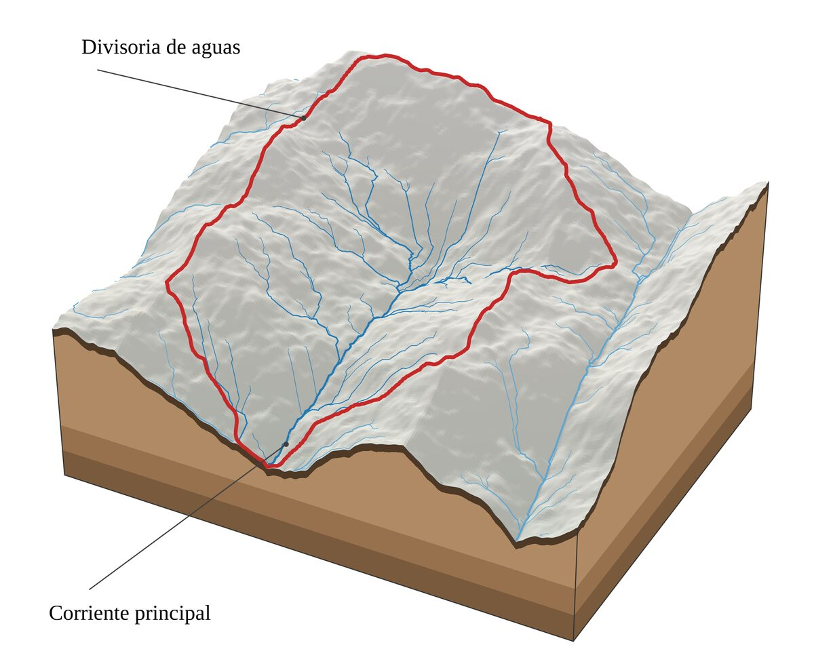
Las cuencas de Costa Rica
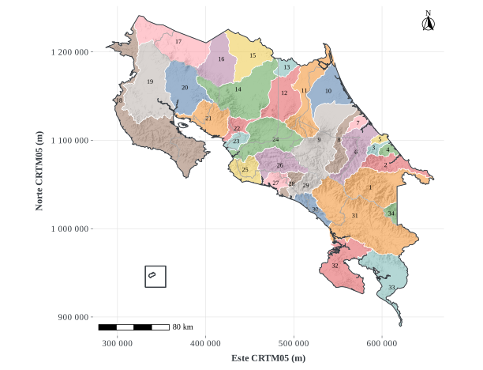
- 34 cuencas principales, hacia el Pacífico o el Caribe.
- Sobre ellas se planifica el abastecimiento, la generación, el riego y la gestión del riesgo.
- Los límites de cantones y provincias no coinciden con los de las cuencas: varias municipalidades comparten un mismo río.
Datos del SNIT (Instituto Geográfico Nacional, 2025).
Delimitación
A mano, sobre curvas de nivel:
- Ubicar el punto de control.
- Identificar el cauce principal y sus afluentes aguas arriba.
- Ubicar las crestas que separan el agua de las cuencas vecinas.
- Unirlas desde el punto de control, perpendicular a las curvas y sin cruzar cauces.
Con SIG sobre un MDE: corregir depresiones, dirección y acumulación de flujo, punto de control y polígono. El punto debe caer sobre el cauce del MDE.
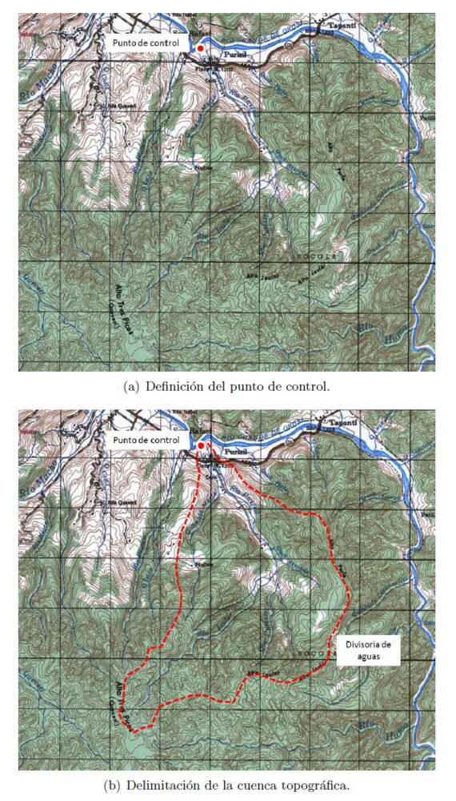
Red de drenaje y orden de los cauces
- Permanentes, intermitentes (solo en la época lluviosa) y efímeros (solo durante la lluvia).
Orden de Horton y Strahler (Strahler, 1957):
- Sin afluentes: orden 1.
- Dos cauces de orden \(n\) forman uno de orden \(n + 1\).
- Si se une uno menor a uno mayor, sigue el mayor.
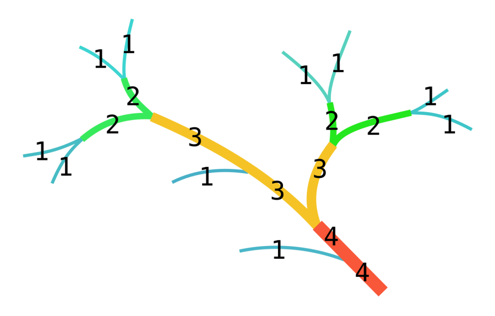
El orden depende de la escala del mapa: solo se comparan órdenes obtenidos con la misma escala.
Ejemplo: razón de bifurcación
\[ R_b = \frac{N_u}{N_{u+1}} \]
Cuenca de orden 6, mapa 1:50 000: 1554, 328, 73, 12, 3 y 1 cauces de orden 1 a 6.
Solución:
- Por pares: \(1554/328 = 4.74\); \(328/73 = 4.49\); \(73/12 = 6.08\); \(12/3 = 4.00\); \(3/1 = 3.00\).
- Media: \(22.31/5 = 4.46\).
Strahler halló de 4.0 a 5.1 entre órdenes 1 y 2 donde la geología no impone la forma de la red. El 6.08 pide revisar el mapa geológico.
Coeficiente de compacidad
\[ K_c = \frac{P}{2\sqrt{\pi A}} \approx 0.28\,\frac{P}{\sqrt{A}} \]
| \(K_c\) | Referencia | Lectura |
|---|---|---|
| 1.00 a 1.15 | Círculo, cuadrado | Compacta |
| 1.15 a 1.30 | Rectángulo 2:1 y 3:1 | Ligeramente alargada |
| 1.30 a 1.60 | Rectángulo 4:1 | Alargada |
| > 1.60 | Rectángulo 6:1 | Muy alargada |
Ejemplo: \(A = 50\) km², \(P = 30\) km.
Solución:
\(K_c = 0.28 \times 30/\sqrt{50} = 1.19\): ligeramente alargada. Los aportes llegan casi juntos y el hidrograma tendrá un pico marcado.
Un contorno irregular sube \(K_c\) por sí solo; la cuenca real suele ser algo menos alargada de lo que indica.
Factor de forma
\[ K_f = \frac{B}{L} = \frac{A}{L^2} \]
\(L\): longitud axial, del punto de control al punto más alejado de la divisoria (Horton, 1945).
| \(K_f\) | Forma | Respuesta |
|---|---|---|
| > 0.50 | Compacta | Rápida, picos altos |
| 0.25 a 0.50 | Moderadamente alargada | Intermedia |
| < 0.25 | Alargada | Lenta, picos bajos |
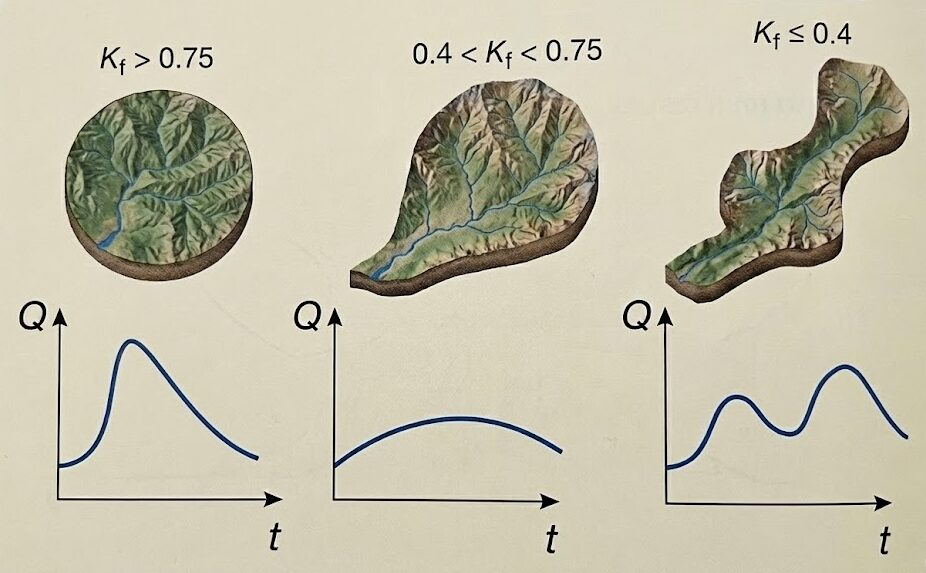
Ejemplo: \(A = 120\) km², \(L = 18\) km. Solución: \(K_f = 120/18^2 = 0.37\), moderadamente alargada.
Densidad de drenaje y sinuosidad
\[ D_d = \frac{\sum L_i}{A} \]
- Alta: suelos poco permeables, pendientes fuertes, poca vegetación; respuesta rápida.
- Baja: materiales permeables; más infiltración.
- Ejemplo: \(86.06/52.87 = 1.63\) km/km².
Depende de la escala del mapa o del MDE.
\[ S = \frac{L}{L_v} \]
- \(L\): longitud por el thalweg; \(L_v\): en línea recta o por el eje del valle.
- \(S > 1.5\): cauce meándrico (Leopold & Wolman, 1957).
- Ejemplo: \(12.6/8.4 = 1.50\). La pendiente es dos tercios de la de un cauce recto con el mismo desnivel.
Patrones del cauce y de la red
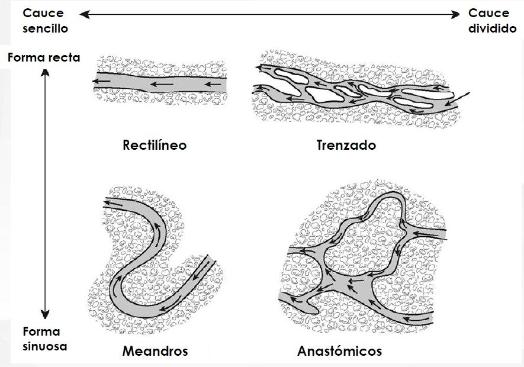
- Trenzado: pendiente fuerte, caudal variable y mucho sedimento grueso.
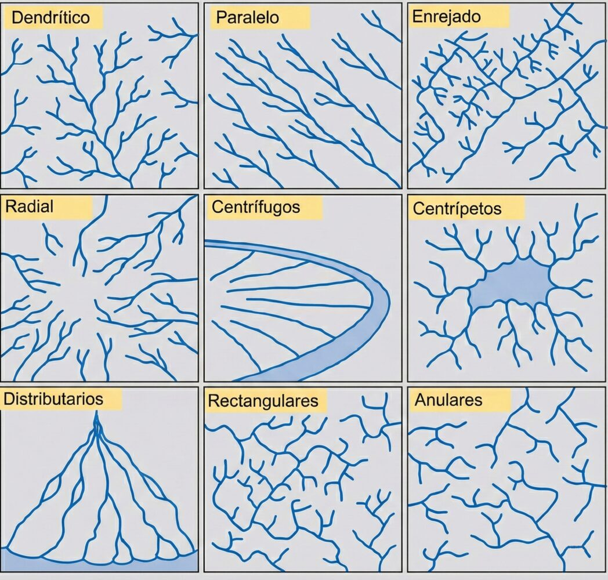
El patrón da pistas de la geología: dendrítico en materiales uniformes, radial en conos volcánicos, rectangular sobre fallas.
Explorador: la forma de la cuenca
Rectángulo equivalente de Roche (1963): misma área y mismo perímetro. Se usa en la clase siguiente.
Para practicar
- Delimite a mano, sobre una hoja 1:50 000 del IGN, la cuenca de una quebrada hasta un puente. Compare el área con la de un SIG.
- Numere con Strahler la red de una cuenca pequeña y calcule la razón de bifurcación media.
- Una cuenca tiene 85 km², 52 km de perímetro, 16 km de longitud axial y 140 km de cauces. Calcule \(K_c\), \(K_f\) y \(D_d\) e interprete la respuesta esperada.
- Un tramo mide 4.2 km por el cauce y 2.6 km por el eje del valle. ¿Es meándrico?
- ¿Por qué no deben compararse densidades de drenaje calculadas con mapas de escalas distintas?
Más ejercicios en el capítulo 4 del libro.
Ideas para llevar
- La cuenca es el sistema hidrológico local: la limita la divisoria y la define el punto de control.
- El SIG delimita en segundos, pero el resultado se revisa con criterio y con el mapa.
- El orden, la razón de bifurcación y la densidad de drenaje describen la red; dependen de la escala.
- \(K_c\) y \(K_f\) resumen la forma: las cuencas compactas responden rápido y con picos altos.
- Un cauce sinuoso tiene menos pendiente y retrasa la crecida.
1.4 Relieve y pendientes de la cuenca
Capítulo 4 del libro
Qué problema resuelve
Si el río es empinado en las cabeceras y casi plano cerca de la salida, ¿qué pendiente se usa en la fórmula del tiempo de concentración?
- El relieve controla la velocidad con que el agua llega al punto de control.
- La elevación se relaciona con la temperatura y la lluvia de la cuenca.
- Las pendientes entran en el tiempo de concentración, la erosión y el riesgo de deslizamientos.
En esta clase: elevaciones y curva hipsométrica, rectángulo equivalente, índice de pendiente y pendientes de laderas y del cauce.
Elevaciones y curva hipsométrica
- Elevación máxima, mínima, media y mediana. La mediana deja la mitad del área arriba: representa mejor que la media cuando hay pocos picos muy altos.
- Curva hipsométrica: para cada cota, el porcentaje del área que queda por encima.
- Forma y etapa de erosión (Strahler, 1952):
- convexa: cuenca joven, en plena erosión;
- en S: cuenca madura;
- cóncava: cuenca vieja, de relieve suave.
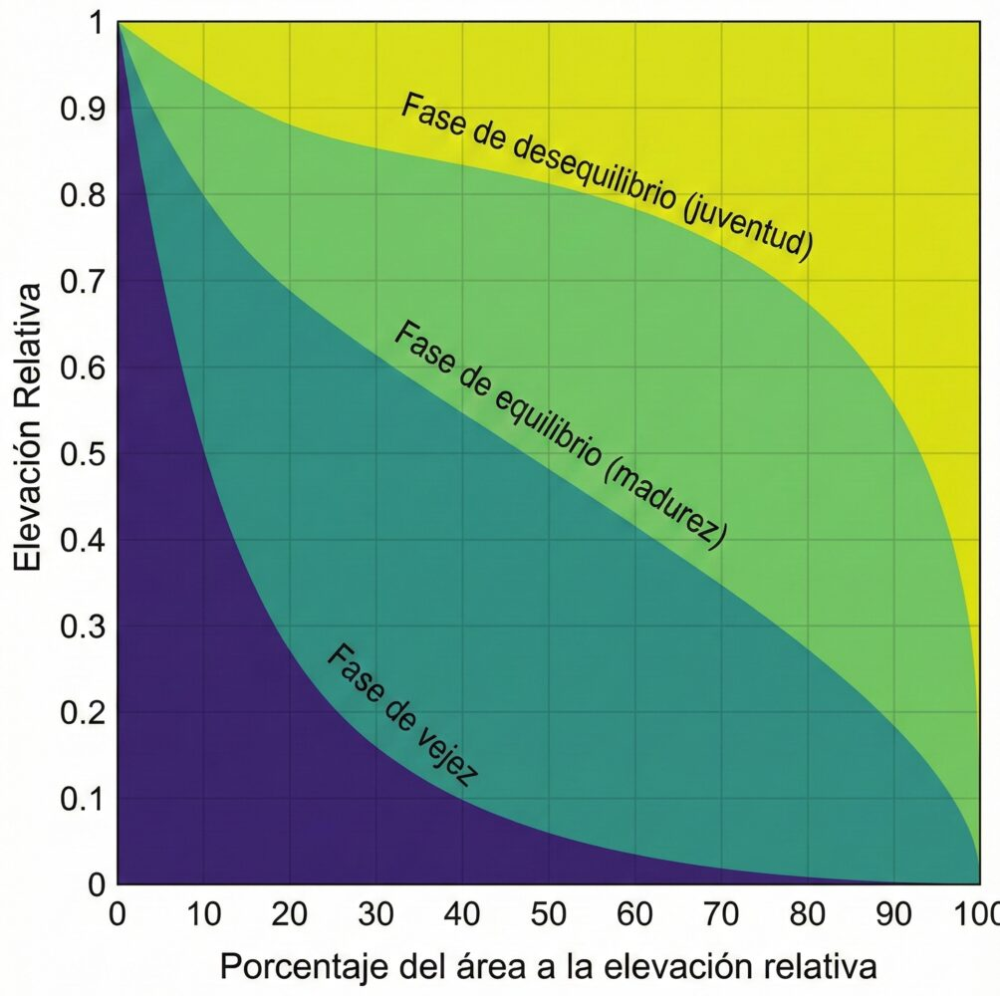
Ejemplo: curva hipsométrica
Cuenca de 500 a 900 m s. n. m.; áreas de las franjas de 50 m, de arriba hacia abajo: 2.40, 4.10, 6.80, 9.30, 11.20, 8.70, 5.50 y 3.00 km².
Solución:
- Área total: 51.0 km².
- Área por encima de cada cota, acumulando desde arriba: 0, 2.4, 6.5, 13.3, 22.6, 33.8, 42.5, 48.0 y 51.0 km².
- Porcentaje: 0, 4.7, 12.7, 26.1, 44.3, 66.3, 83.3, 94.1 y 100 %.
- Mediana: faltan \(25.5 - 22.6 = 2.9\) km² en la franja de 700 a 650 m: \(700 - 50 \times 2.9/11.2 = 687\) m.
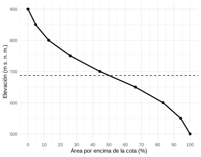
Rectángulo equivalente
Misma área y mismo perímetro que la cuenca (Roche, 1963); las curvas de nivel pasan a ser rectas paralelas al lado menor.
\[ L, l = \frac{K_c\sqrt{A}}{1.12}\left[1 \pm \sqrt{1 - \left(\frac{1.12}{K_c}\right)^2}\right] \]
Solo hay solución real con \(K_c \geq 1.12\).
Ejemplo: \(A = 180\) km², \(P = 62\) km.
Solución:
- \(K_c = 0.28 \times 62/\sqrt{180} = 1.294\); \((1.12/1.294)^2 = 0.749\) y \(\sqrt{1 - 0.749} = 0.501\).
- \(K_c\sqrt{A}/1.12 = 15.50\) km; \(L = 15.50 \times 1.501 = 23.26\) km y \(l = 15.50 \times 0.499 = 7.74\) km.
- Verificación: \(23.26 \times 7.74 = 180.0\) km² y \(2(23.26 + 7.74) = 62.0\) km.
Índice de pendiente de Roche
\[ I_p = \frac{1}{\sqrt{L}} \sum_{i=1}^{n} \sqrt{\beta_i\,(a_i - a_{i-1})} \]
- \(L\): lado mayor del rectángulo equivalente.
- \(\beta_i = A_i/A\): fracción del área de la franja \(i\).
- \(a_i - a_{i-1}\): desnivel de la franja, en las mismas unidades que \(L\).
Sirve para comparar cuencas calculadas con el mismo procedimiento.
Ejemplo: 60 km², de 500 a 1000 m, \(L = 24\) km, franjas de 100 m (0.1 km).
| Franja (m) | \(A_i\) (km²) | \(\beta_i\) | \(\sqrt{0.1\,\beta_i}\) |
|---|---|---|---|
| 500 a 600 | 6.0 | 0.100 | 0.1000 |
| 600 a 700 | 14.0 | 0.233 | 0.1528 |
| 700 a 800 | 18.0 | 0.300 | 0.1732 |
| 800 a 900 | 12.0 | 0.200 | 0.1414 |
| 900 a 1000 | 10.0 | 0.167 | 0.1291 |
| Suma | 60.0 | 1.000 | 0.6965 |
Solución: \(I_p = 0.6965/\sqrt{24} = 0.142\).
Pendiente de las laderas
- Controla la velocidad del flujo sobre el terreno, la infiltración y la erosión.
- Hoy se calcula con un SIG sobre el MDE.
- Sobre curvas de nivel, método de Horton con una cuadrícula (Aparicio, 1992):
\[ S = \frac{n\,e}{\sum L}, \qquad S_m = \frac{S_x + S_y}{2} \]
\(n\): intersecciones con las curvas; \(e\): equidistancia; \(\sum L\): longitud de las líneas dentro de la cuenca.
| Categoría | Pendiente (%) | Relieve |
|---|---|---|
| a | 0 a 3 | Plano |
| b | 4 a 8 | Ligeramente ondulado |
| c | 9 a 15 | Moderadamente ondulado |
| d | 16 a 30 | Ondulado |
| e | 31 a 55 | Fuertemente ondulado |
| f | 56 a 75 | Escarpado |
| g | > 75 | Fuertemente escarpado |
Fuente: Ministerio de Agricultura y Ganadería & Ministerio de Ambiente y Energía (2019). Por encima de 50 % a 75 % crece el riesgo de deslizamientos.
Pendiente del cauce principal
- Media: \(S_1 = (h_{max} - h_{min})/L\). Ignora la forma del perfil.
- Compensada: \(S_2\), recta con la misma área bajo el perfil.
- Taylor y Schwarz (Taylor & Schwarz, 1952): canal uniforme con el mismo tiempo de recorrido, si \(V \propto \sqrt{S}\):
\[ S_3 = \left[\frac{\sum l_i}{\sum l_i/\sqrt{S_i}}\right]^2 \]
\(S_3\) da más peso a los tramos planos, que son los que retrasan el agua.
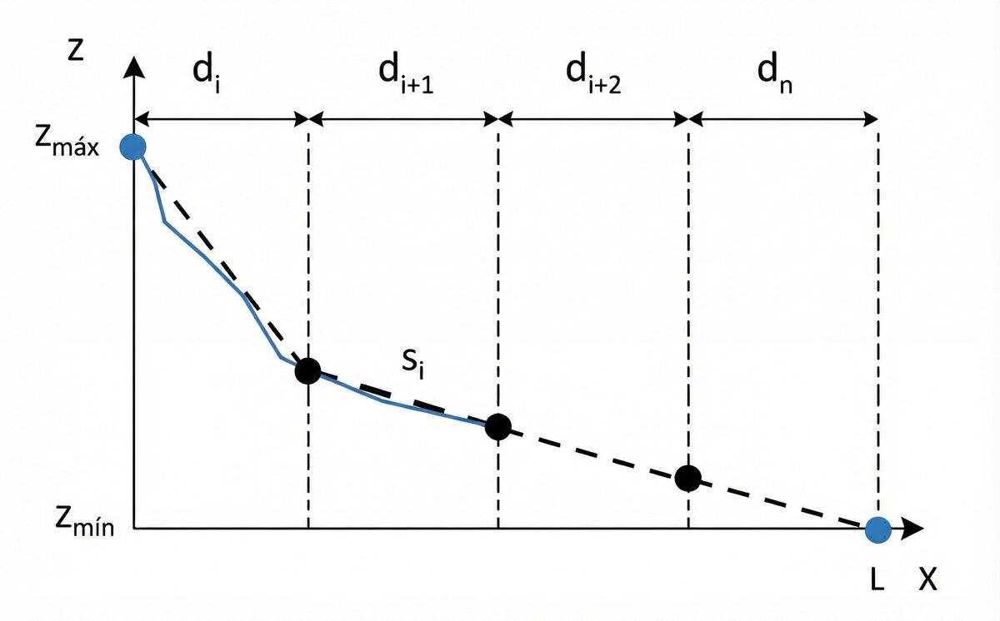
Ejemplo: pendiente de Taylor y Schwarz
Cauce de 2000 m en cinco tramos de 400 m, con desniveles de 8, 10, 12, 15 y 20 m de abajo hacia arriba.
Solución:
- \(S_i = \Delta h_i/400\): 0.0200, 0.0250, 0.0300, 0.0375 y 0.0500.
- \(S_1 = 65/2000 = 0.0325\).
- \(\sum l_i/\sqrt{S_i} = 11\,522.1\).
- \(S_3 = (2000/11\,522.1)^2 = 0.0301\).
| Tramo | \(S_i\) | \(l_i/\sqrt{S_i}\) |
|---|---|---|
| 1 | 0.0200 | 2828.4 |
| 2 | 0.0250 | 2529.8 |
| 3 | 0.0300 | 2309.4 |
| 4 | 0.0375 | 2065.6 |
| 5 | 0.0500 | 1788.9 |
Con \(S_1\) el tiempo de concentración saldría algo más corto que el real.
Explorador: perfil del cauce y pendientes
Cinco tramos de 400 m. Pruebe un tramo bajo casi plano: \(S_3\) cae mucho más que \(S_1\).
Geología, cobertura y cuencas urbanas
Geología:
- Define cuánta agua entra al subsuelo, cuánta se guarda y cuánta vuelve como flujo base.
- Poros primarios, entre granos; secundarios, por fracturas, fallas o disolución, como en calizas y muchas rocas volcánicas.
- \(n = S_y + S_r\): una arcilla puede tener porosidad alta y liberar muy poca agua.
Cobertura y uso del suelo:
- La vegetación regula el agua por intercepción, infiltración y evapotranspiración.
- La cobertura cambia durante la vida de un proyecto; el área y la forma no.
- En una ciudad, techos y pavimentos dan hidrogramas más altos y más cortos, y la divisoria la define también el sistema pluvial.
Estos efectos se cuantifican en el Tema 4 con el número de curva y el coeficiente de escorrentía.
Para practicar
- Con las áreas de franja de una cuenca real (de un SIG), construya la curva hipsométrica y obtenga la elevación mediana. ¿Qué etapa de erosión sugiere?
- Una cuenca tiene 95 km² y 48 km de perímetro. Calcule su rectángulo equivalente y verifique área y perímetro.
- Con el rectángulo del ejercicio anterior y franjas de 200 m de igual área entre 400 y 1400 m, calcule \(I_p\).
- Un cauce de 3 km tiene tres tramos de 1 km con 5, 30 y 80 m de desnivel. Calcule \(S_1\) y \(S_3\) y explique la diferencia.
- ¿En qué categoría de pendiente queda una ladera de 40 %? ¿Qué riesgos implica?
Más ejercicios en el capítulo 4 del libro.
Ideas para llevar
- La curva hipsométrica resume cómo se reparte el área con la altura; la mediana sale de ella.
- El rectángulo equivalente conserva área y perímetro; existe solo si \(K_c \geq 1.12\).
- El índice de pendiente sirve para comparar cuencas con el mismo procedimiento.
- Para el tiempo de concentración, la pendiente de Taylor y Schwarz representa mejor el cauce que la media.
- Geología y cobertura deciden cuánto se infiltra y cuánto escurre.
1.5 La atmósfera y la energía del Sol
Capítulos 5 y 6 del libro
Qué problema resuelve
¿Por qué en Costa Rica el Sol del mediodía es más alto en abril y en agosto que el 21 de junio, el día más largo del año?
- Casi todos los procesos hidrológicos importantes empiezan en la atmósfera: evaporación, condensación y lluvia.
- La energía del Sol los pone en marcha; la presión, la humedad y la temperatura los describen.
- Estas variables entran después en la evapotranspiración, la lluvia de diseño y el control de los registros.
En esta clase: tiempo y clima, capas de la atmósfera, presión y humedad, balance de energía e insolación.
Tiempo y clima
| Meteorología | Climatología | |
|---|---|---|
| Estudia | El tiempo: estado de la atmósfera ahora | El clima: estadísticas del tiempo en décadas |
| Escala | Horas a días | Normales de 30 años, como 1991–2020 |
| Pregunta típica | ¿Cuánto lloverá mañana en la cuenca? | ¿Qué lluvia diaria se supera una vez cada 50 años? |
| Uso en hidrología | Pronóstico de crecidas, operación de embalses | Diseño de obras, balances, disponibilidad |
- Las dos sirven para revisar registros, rellenar datos con estaciones de la misma vertiente y juzgar si una estación representa la cuenca.
- Se apoyan en las mismas leyes: conservación de la masa, de la energía y del movimiento.
Composición y capas de la atmósfera
- Aire seco: nitrógeno 78 %, oxígeno 21 %, argón 0.9 % y trazas, entre ellas CO₂, metano y óxido nitroso (Wallace & Hobbs, 2006).
- Vapor de agua: de casi 0 a 4 % del volumen; está en los primeros kilómetros.
- Troposfera: hasta unos 16 km en el trópico; tiene casi todo el vapor y la temperatura baja en promedio 6.5 °C/km.
- Estratosfera: el ozono la calienta; su inversión aplana el yunque de las tormentas.
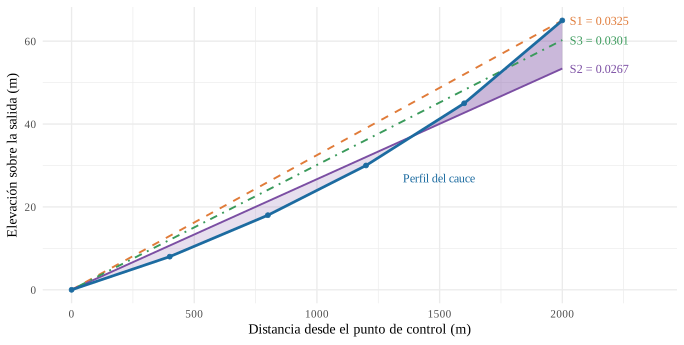
Presión atmosférica
\[ P = \rho\,R_d\,T, \qquad \frac{dP}{dz} = -\rho\,g, \qquad P = 1013.25\left(\frac{288.15 - 0.0065\,z}{288.15}\right)^{5.256} \]
\(R_d = 287\) J/(kg·K); \(P\) en hPa y \(z\) en m, válida hasta 11 km (NOAA et al., 1976).
Ejemplo: presión a 1150 m (San José) y a 3400 m (cerro de la Muerte), y la constante psicrométrica \(\gamma = 0.665 \times 10^{-3}\,P\).
Solución:
- A 1150 m: base \(280.675/288.15 = 0.97406\); potencia \(0.87097\); \(P = 882.5\) hPa y \(\gamma = 0.0587\) kPa/°C.
- A 3400 m: base \(0.92330\); potencia \(0.65745\); \(P = 666.2\) hPa y \(\gamma = 0.0443\) kPa/°C.
- A 3400 m la presión es 34 % menor que al nivel del mar: en montaña se usa la presión de la estación.
Humedad del aire
- \(e\): presión de vapor; \(e_s\): la de saturación; \(HR = 100\,e/e_s\).
- Punto de rocío \(T_d\): temperatura a la que el aire se satura sin cambiar su vapor; \(e_a = e_s(T_d)\).
\[ e_s(T) = 0.6108\,\exp\!\left(\frac{17.27\,T}{T + 237.3}\right) \]
- Clausius-Clapeyron: por cada grado, el aire saturado admite de 6 % a 7 % más vapor.
- La HR sube de noche y baja en la tarde aunque el vapor no cambie.
Ejemplo: 26.0 °C y punto de rocío de 18.0 °C a las 14:00.
Solución:
- \(e_s(26.0) = 0.6108 \times 5.503 = 3.361\) kPa.
- \(e_a = e_s(18.0) = 0.6108 \times 3.379 = 2.064\) kPa.
- \(HR = 100 \times 2.064/3.361 = 61.4\) %.
- Déficit: \(3.361 - 2.064 = 1.297\) kPa.
Si en la madrugada el aire baja a 18 °C, la HR llega a 100 % y hay rocío.
Balance de energía y efecto invernadero
De 342 W/m² que llegan al tope de la atmósfera (Le Treut et al., 2007):
- 107 (31 %) se reflejan: el albedo de la Tierra;
- 67 (20 %) los absorbe la atmósfera;
- 168 (49 %) los absorbe la superficie.
La superficie los devuelve como calor latente (78 W/m²), calor sensible (24 W/m²) y radiación de onda larga, \(R = \varepsilon\,\sigma\,T^4\).
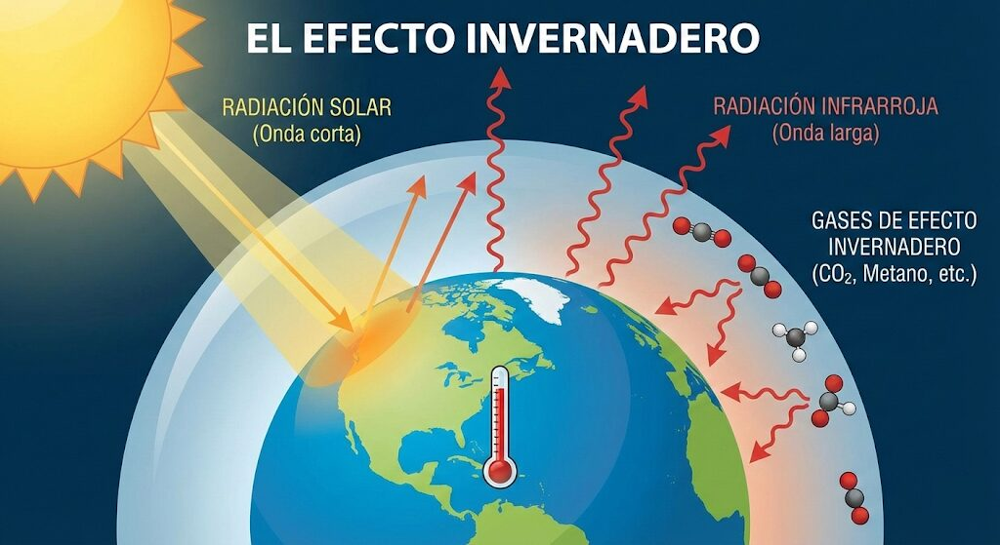
El calor latente que se lleva la evaporación se libera en las nubes: es el vínculo entre energía y ciclo del agua.
Ejemplo: la Tierra sin efecto invernadero
\[ S_0\,(1 - \alpha)\,\pi r^2 = \sigma\,T_e^4\,4\pi r^2 \quad\Rightarrow\quad T_e = \left[\frac{S_0\,(1-\alpha)}{4\,\sigma}\right]^{1/4} \]
Con \(S_0 = 1361\) W/m², \(\alpha = 0.30\) y cuerpo negro; temperatura media observada de unos 15 °C.
Solución:
- Energía absorbida por unidad de área de la esfera: \(1361 \times 0.70/4 = 238.2\) W/m².
- \(238.2/5.67 \times 10^{-8} = 4.201 \times 10^9\) K⁴; raíz cuarta: \(T_e = 254.6\) K \(= -18.6\) °C.
- El efecto invernadero calienta la superficie unos \(15 - (-18.6) = 33.6\) °C.
Un cambio de 1 % en la energía absorbida mueve \(T_e\) unos 0.6 °C.
Insolación
Constante solar: 1361 W/m² (Kopp & Lean, 2011). Lo que llega al suelo depende de:
- la altura del Sol;
- el espesor de atmósfera atravesado;
- la duración del día: a 10° N, de 11.4 a 12.6 h;
- la nubosidad.
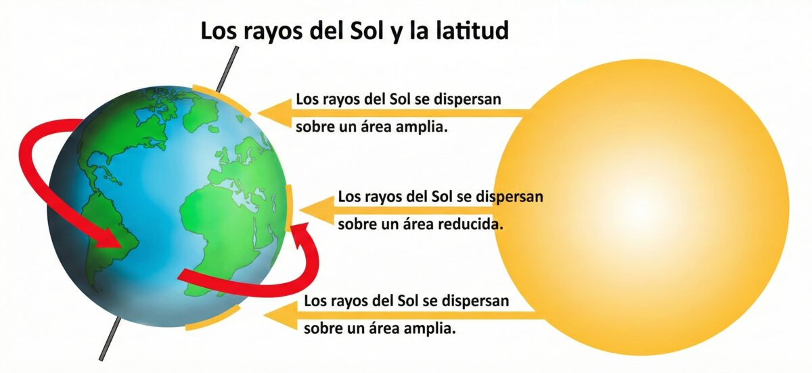
\[ I = S_0\,d_r\,\cos\theta_z, \qquad \cos\theta_z = \sin\varphi\,\sin\delta + \cos\varphi\,\cos\delta\,\cos\omega \]
\(\delta = 0.409\,\sin(2\pi J/365 - 1.39)\), \(d_r = 1 + 0.033\cos(2\pi J/365)\) y \(\omega = \pi\,(t - 12)/12\), con \(t\) en hora solar (Allen et al., 1998).
Ejemplo: insolación a 10° N el 21 de junio
Solución (\(J = 172\)):
- \(\delta = 0.4090\) rad (23.43°) y \(d_r = 0.9675\).
- A las 9:00, \(\omega = -45°\): \(\cos\theta_z = 0.0690 + 0.6389 = 0.7080\) e \(I = 1361 \times 0.9675 \times 0.7080 = 932\) W/m².
- Al mediodía, \(\cos\theta_z = \cos(10° - 23.43°) = 0.9726\): \(I = 1281\) W/m².
- \(\omega_s = \arccos(-\tan\varphi\tan\delta) = 1.6473\) rad: el día dura 12.6 h y \(R_a = 36.7\) MJ/(m²·d).
- El 21 de diciembre: 11.4 h, 1173 W/m² al mediodía y 30.8 MJ/(m²·d).
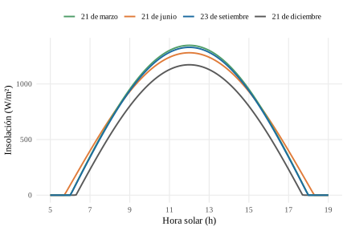
En los equinoccios el mediodía pasa de 1340 W/m²; junio gana por la duración del día.
Explorador: insolación instantánea
Mueva el día a 105 (15 de abril) con 10° de latitud: el Sol pasa casi por el cenit al mediodía.
Para practicar
- Calcule la presión y la constante psicrométrica en Cartago (1435 m).
- Una estación marca 31 °C y 70 % de humedad relativa. Calcule \(e_s\), \(e_a\), el punto de rocío y el déficit de presión de vapor.
- Repita el ejemplo sin efecto invernadero con un albedo de 0.35. ¿Cuánto cambia \(T_e\)?
- Calcule la insolación al mediodía a 10° N el 15 de abril (\(J = 105\)) y compárela con la del 21 de junio.
- ¿En qué dos días del año el Sol pasa por el cenit al mediodía en Liberia (10.6° N)? Use la declinación.
Más ejercicios en los capítulos 5 y 6 del libro.
Ideas para llevar
- El tiempo es el estado de la atmósfera ahora; el clima, su estadística en 30 años o más.
- La presión baja con la altura: en montaña se usa la presión del sitio.
- El vapor de saturación crece de 6 % a 7 % por grado: un aire más caliente puede dar lluvias más intensas.
- El efecto invernadero mantiene la superficie unos 33 °C más caliente que sin atmósfera.
- Entre los trópicos el Sol pasa por el cenit dos veces al año; la insolación diaria depende también de la duración del día.
1.6 Estabilidad atmosférica y formación de la lluvia
Capítulos 6 y 7 del libro
Qué problema resuelve
¿Por qué en el Valle Central las mañanas de la época lluviosa suelen estar despejadas y los aguaceros llegan en la tarde?
- Casi toda la lluvia se forma porque el aire sube, se expande y se enfría.
- Que el aire siga subiendo o regrese depende de la estabilidad de la atmósfera.
- El tipo de ascenso define la intensidad, la duración y el área de la lluvia, y con ello el diseño.
En esta clase: enfriamiento adiabático, efecto Foehn, estabilidad, diagrama oblicuo T-log p y CAPE, formación y tipos de precipitación.
Ascenso del aire y enfriamiento adiabático
- Aire no saturado: gradiente adiabático seco, \(\Gamma_d = g/c_p \approx 9.8\) °C/km.
- Saturado: la condensación libera calor latente y el gradiente húmedo \(\Gamma_s\) baja a 4 a 7 °C/km.
- Base de las nubes (Lawrence, 2005): \(z_{\text{NCA}} \approx 125\,(T - T_d)\) m.
El aire sube por convección, ascenso orográfico, frentes (empujes fríos de noviembre a marzo) y convergencia, como en la ZCIT.
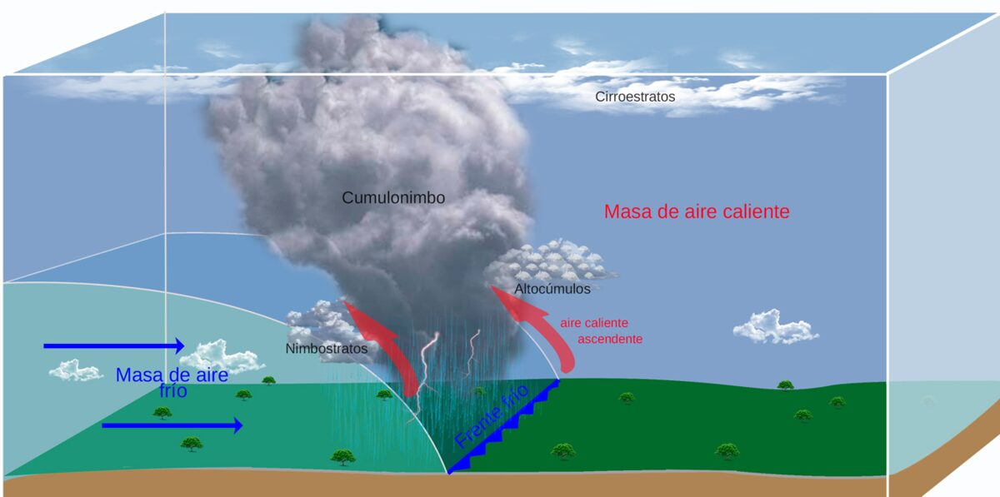
Ejemplo: aire que cruza la cordillera de Talamanca
Aire del Caribe a 26 °C con punto de rocío de 19 °C; sube hasta 3000 m y baja a un valle del Pacífico a 700 m. \(\Gamma_d = 9.8\) y \(\Gamma_s = 6.0\) °C/km; el agua condensada cae como lluvia.
Solución:
- Base de las nubes: \(125 \times (26 - 19) = 875\) m.
- A 875 m: \(26 - 9.8 \times 0.875 = 17.4\) °C.
- En la cima: \(17.4 - 6.0 \times 2.125 = 4.7\) °C.
- En el valle: \(4.7 + 9.8 \times 2.30 = 27.2\) °C.
- A 700 m en el Caribe: \(19.1\) °C. Sotavento: 8.1 °C más caliente y seco.
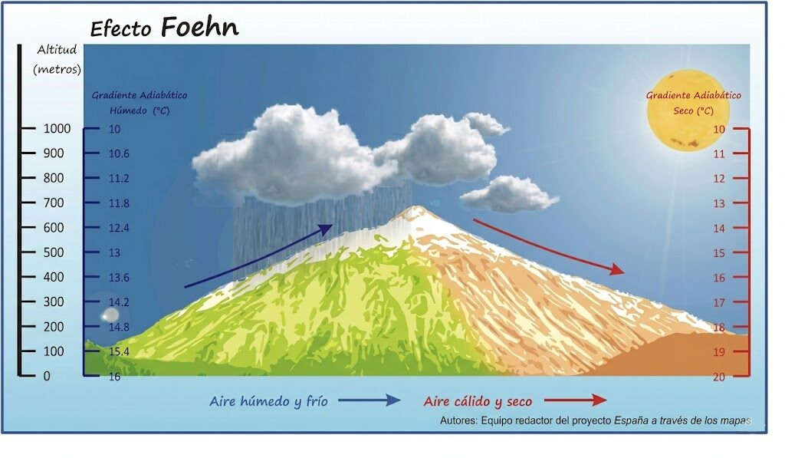
Estabilidad de la atmósfera
Se compara el gradiente real del entorno, \(\gamma\), con \(\Gamma_d\) y \(\Gamma_s\) (Stull, 2016):
| Clase | Condición | El aire que sube |
|---|---|---|
| Absolutamente estable | \(\gamma < \Gamma_s\) | Queda más frío; vuelve a bajar |
| Condicionalmente inestable | \(\Gamma_s < \gamma < \Gamma_d\) | Estable si no está saturado; inestable si lo está |
| Absolutamente inestable | \(\gamma > \Gamma_d\) | Queda más caliente; sigue subiendo |
- La inestabilidad condicional es el caso común en el trópico: si algo empuja el aire hasta su base de nubes, sigue subiendo solo.
- Inversión térmica: la temperatura sube con la altura. Es lo más estable; frena la convección y atrapa la contaminación.
- Se forma en noches despejadas, sobre superficies frías y en el descenso de los anticiclones, como la inversión de los alisios.
Diagrama oblicuo T-log p y CAPE
Sobre el sondeo de una radiosonda:
- La parcela sube por la adiabática seca hasta el NCA.
- Desde el NCA, por la adiabática húmeda.
- NCL: la parcela queda por primera vez más caliente que el entorno.
- NE: vuelve a quedar más fría; tope de los cumulonimbos.
\[ \text{CAPE} = R_d \sum_{\text{NCL}}^{\text{NE}} (T_p - T_e)\ln\frac{p_{\text{inf}}}{p_{\text{sup}}} \]
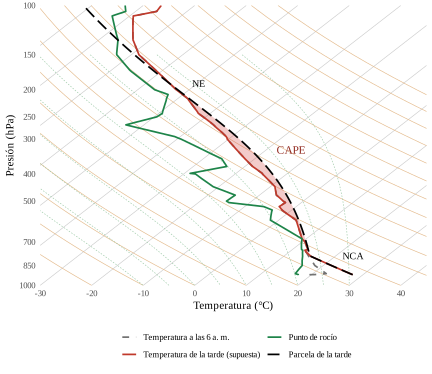
Ejemplo: CAPE de un sondeo de Juan Santamaría
Sondeo del 12 de setiembre de 2019, 12 UTC (6 a. m.): 916 hPa, 838 m, 19.6 °C y punto de rocío de 17.4 °C (University of Wyoming, Department of Atmospheric Science, 2019). ⬇ Descargar sondeo_mroc_2019_09_12.csv
Solución:
- Mañana: a 908 hPa la parcela está 3.8 °C más fría que el entorno (inversión nocturna). CAPE nulo.
- Tarde, con 28 °C y el mismo rocío: NCA a 1325 m (788 hPa) con 15.0 °C; la inversión desaparece.
- CAPE \(\approx 534\) J/kg; \(w_{\text{máx}} = \sqrt{2\,\text{CAPE}} = 33\) m/s.
| Capa (hPa) | \(\overline{T_p - T_e}\) | \(\ln(p_i/p_s)\) | J/kg |
|---|---|---|---|
| 788–700 | 0.08 | 0.118 | 3 |
| 700–500 | 0.75 | 0.336 | 72 |
| 500–400 | 1.60 | 0.223 | 102 |
| 400–300 | 2.15 | 0.288 | 178 |
| 300–250 | 2.10 | 0.182 | 110 |
| 250–200 | 1.05 | 0.223 | 67 |
| 200–190 | 0.13 | 0.051 | 2 |
Con todos los niveles da unos 590 J/kg; aiRthermo (Sáenz et al., 2025), con temperatura virtual, unos 690.
Explorador: ¿sube o regresa la parcela?
Simplificación: entorno lineal y \(\Gamma_s = 6\) °C/km. Negro: entorno; rojo: parcela.
Formación de la precipitación
Tres condiciones:
- Saturación: el aire se enfría hasta su punto de rocío, casi siempre porque sube.
- Núcleos de condensación: sal marina, polvo o humo.
- Crecimiento: una gota de lluvia tiene un radio cien veces el de una gota de nube.
Crecen por colisión y coalescencia, en nubes cálidas, o por cristales de hielo que crecen a costa de gotas sobreenfriadas, en nubes frías (Wallace & Hobbs, 2006).
Formas (World Meteorological Organization, 2018):
- lluvia: gotas de más de 0.5 mm;
- llovizna: gotas menores, poca lámina;
- granizo: hielo de más de 5 mm, en cumulonimbos.
1 mm de lluvia es 1 L/m²; 50 mm sobre 10 km² son 500 000 m³.
Tipos de precipitación según el ascenso
- Convectiva: intensa, corta y de pocos kilómetros. La de las tardes del Valle Central; manda en drenaje urbano.
- Orográfica: mucha en barlovento, poca en sotavento; puede durar días.
- Frontal o ciclónica: moderada, larga y extensa; temporales por ondas tropicales y ciclones.
- Por convergencia: la ZCIT.
Los tipos se combinan: una tormenta convectiva crece más sobre una montaña.
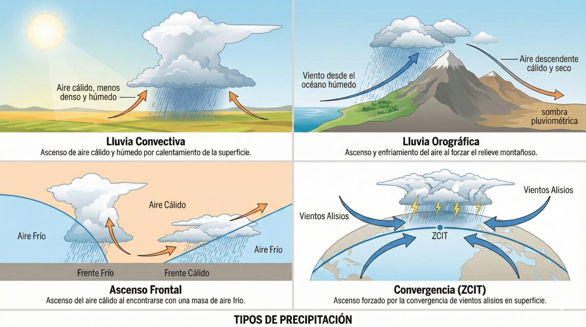
Para practicar
- Aire a 30 °C con punto de rocío de 22 °C sube por una ladera. ¿A qué altura se forman las nubes?
- Repita el ejemplo de Talamanca con punto de rocío de 15 °C. ¿Cuánto cambia la temperatura del valle de sotavento?
- Un entorno tiene 7.5 °C/km. ¿Qué clase de estabilidad es? ¿Qué pasa con una parcela no saturada y con una saturada?
- Con el explorador, busque la temperatura de la tarde a la que aparece convección libre con \(T_d = 18\) °C y \(\gamma = 6.5\) °C/km.
- ¿Qué tipo de lluvia esperaría en Limón en diciembre y en San José en setiembre? Justifique con el mecanismo de ascenso.
Más ejercicios en los capítulos 6 y 7 del libro.
Ideas para llevar
- El aire que sube se enfría 9.8 °C/km seco y de 4 a 7 °C/km saturado.
- En sotavento el aire llega más caliente y seco: por eso una vertiente es más lluviosa que la otra.
- La estabilidad depende del gradiente del entorno; el trópico suele ser condicionalmente inestable.
- El CAPE mide la energía para la convección: en la mañana suele ser cero y crece con el calentamiento de la tarde.
- El tipo de lluvia fija su intensidad, duración y extensión, y con ello qué obra se diseña con ella.
1.7 Circulación atmosférica y clima
Capítulo 6 del libro
Qué problema resuelve
¿Por qué Guanacaste pasa cinco meses casi sin lluvia y en Limón llueve todo el año, si están casi a la misma latitud?
- La circulación de la atmósfera reparte el calor y el vapor, y fija dónde y cuándo llueve.
- El régimen de lluvias define la época seca, los caudales de estiaje y la operación de embalses.
- El ENOS cambia la lluvia de un año a otro: pesa en los registros y en el diseño.
En esta clase: viento, circulación general, chorro del Caribe, escalas, ENOS, clasificación de Köppen-Geiger y cambio climático.
Viento y circulación general
Tres fuerzas mueven el viento:
- gradiente de presión, de la alta hacia la baja;
- Coriolis, \(F_c = 2\,\Omega\,v\sin\varphi\): a 10° N es la cuarta parte de la de 45°;
- fricción, en la capa límite.
Célula de Hadley: ascenso en la ZCIT con lluvia, flujo en altura hacia los polos, descenso seco cerca de 30° y retorno en superficie como alisios.
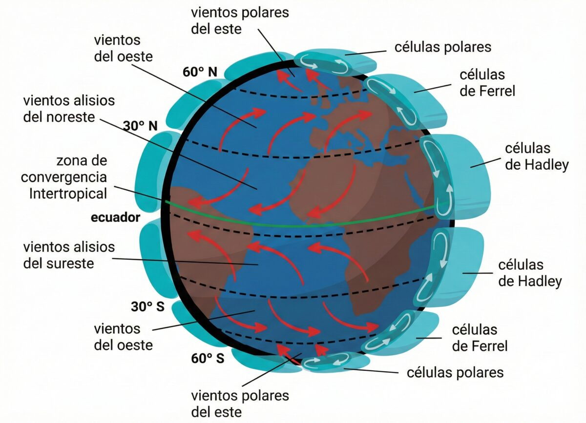
La ZCIT sigue al Sol con semanas de retraso: de mayo a octubre está sobre Centroamérica o cerca.
El chorro de bajo nivel del Caribe
- Banda de alisios máximos a menos de 1 km, con núcleo cerca de 925 hPa (Amador, 2008).
- Dos máximos: julio y, más débil, enero y febrero.
- Vertiente del Caribe: el aire choca con las cordilleras y llueve casi todo el año.
- Vertiente del Pacífico: en julio y agosto el aire baja por sotavento y frena la convección. Es el veranillo o canícula (Magaña et al., 1999).
- En años de El Niño el chorro de julio suele ser más intenso.
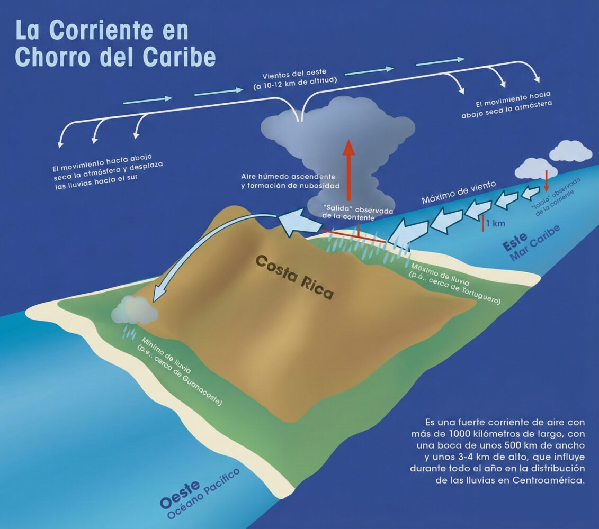
Escalas de los fenómenos atmosféricos
| Escala | Tamaño | Duración | Ejemplos | En hidrología |
|---|---|---|---|---|
| Planetaria | > 10 000 km | Semanas a años | Hadley, ZCIT, ENOS | Régimen de lluvias; años secos o húmedos |
| Sinóptica | 2000 a 10 000 km | Días | Ondas tropicales, empujes fríos | Temporales sobre cuencas grandes |
| Mesoescala | 2 a 2000 km | Horas a días | Huracanes, tormentas, brisas | Crecidas súbitas en cuencas pequeñas |
| Microescala | < 2 km | Segundos a minutos | Turbulencia | Evaporación |
Adaptado de Orlanski (1975). Una tormenta convectiva cubre una cuenca urbana de 5 km² y deja seca la estación vecina.
El Niño-Oscilación del Sur
- Acople océano-atmósfera del Pacífico ecuatorial; se repite cada 2 a 7 años.
- Se sigue con el ONI: anomalía de la temperatura del mar en Niño 3.4. El Niño con +0.5 °C o más.
- El Niño: alisios débiles, agua cálida hacia el este.
- La Niña: alisios y circulación de Walker reforzados.
| Región | El Niño | La Niña |
|---|---|---|
| Pacífico de Costa Rica | Déficit, sequía | Exceso, inundaciones |
| Caribe de Costa Rica | Exceso | Déficit |
| Costa de Perú | Lluvias intensas | Más seco |
Efectos típicos; no todos los eventos los producen (Comité Regional de Recursos Hidráulicos, 2008). Antes de un análisis de frecuencia, revise qué fases cubre el registro.
Clasificación de Köppen-Geiger
| Clase | Criterio |
|---|---|
| E (ET) | \(T_{\text{máx}} < 10\) °C |
| B | \(P_{\text{anual}} < 10\,P_{\text{th}}\) |
| A | \(T_{\text{mín}} \ge 18\) °C |
| Af | \(P_{\text{mín}} \ge 60\) mm |
| Am | \(P_{\text{anual}} \ge 25\,(100 - P_{\text{mín}})\) |
| Aw | Mes más seco en invierno |
| C | \(-3 < T_{\text{mín}} < 18\) °C |
| Cw / Cf | Invierno seco / húmedo todo el año |
| b | \(T_{\text{máx}} < 22\) °C y 4 meses o más con \(T \ge 10\) °C |
Solo usa la temperatura y la lluvia de cada mes (Kottek et al., 2006). Se revisa E, luego B y luego A, C o D.
\[ P_{\text{th}} = 2\,T_{\text{anual}} + \begin{cases} 0 & \text{lluvia de invierno} \\ 28 & \text{lluvia de verano} \\ 14 & \text{otro caso} \end{cases} \]
Lluvia de verano o de invierno: al menos 2/3 del total en ese semestre (verano: abril a setiembre).
El clima de Costa Rica según Köppen-Geiger
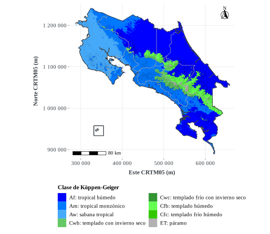
- Af, 43 %: Caribe y Zona Norte.
- Am, 27 %: Pacífico Central y Sur.
- Aw, 17 %: Guanacaste, Valle Central y El General.
- Cwb y Cfb: montañas sobre unos 1500 m.
- ET: cumbres de Talamanca.
Mapa de 1 km de Beck et al. (2023), 1991–2020. Dentro del país es poco detallada: para eso están Holdridge y las regiones del IMN.
Ejemplo: clasificación de sitios de Costa Rica
Temperatura y lluvia mensuales de cinco sitios hipotéticos. ⬇ Descargar clima_mensual_sitios_hipoteticos.csv
Solución, Pacífico Norte:
- \(T_{\text{máx}} = 29.0\) °C: no es E.
- \(T_{\text{anual}} = 27.3\) °C, \(P_{\text{anual}} = 1621\) mm; de abril a setiembre caen 1155 mm, más de 2/3: \(P_{\text{th}} = 82.6\) mm y \(1621 > 826\): no es B.
- \(T_{\text{mín}} = 26.4\) °C: es A.
- \(P_{\text{mín}} = 2\) mm en febrero; \(25 \times 98 = 2450 > 1621\): no es Am. Es Aw.
Solución, montaña a 1800 m:
- \(T_{\text{máx}} = 17.5\) °C; \(P_{\text{th}} = 61.2\) mm y \(612 < 1855\): no es E ni B.
- \(T_{\text{mín}} = 15.6\) °C: es C.
- \(P_{w,\text{mín}} = 15 < P_{s,\text{mín}} = 60\) y \(330 > 150\): Cw.
- \(T_{\text{máx}} < 22\) °C y 12 meses sobre 10 °C: Cwb.
Caribe: Af. Pacífico Sur: Am. Páramo: ET.
Explorador: climograma y clase de Köppen-Geiger
Sitios hipotéticos del libro. Barras: lluvia (mm); línea roja: temperatura. Pruebe el Pacífico Sur con lluvia × 0.6.
Cambio climático y diseño
- Por Clausius-Clapeyron, el aire admite de 6 % a 7 % más vapor por grado: las lluvias intensas tienden a crecer a esa tasa (Trenberth et al., 2003).
- Se esperan aguaceros más fuertes y, a la vez, sequías más largas.
- El diseño clásico supone que el clima pasado representa el futuro; con el cambio climático ese supuesto deja de cumplirse (Milly et al., 2008).
- El ENOS es variabilidad: oscila unos años alrededor del mismo estado. El cambio climático es un cambio que persiste décadas.
Las proyecciones con modelos globales y escenarios SSP se tratan en el libro, capítulo 6.
Para practicar
- Calcule la aceleración de Coriolis para un viento de 10 m/s a 10° N y a 45° N.
- Explique con la célula de Hadley y la ZCIT por qué la época seca del Pacífico coincide con el invierno del hemisferio norte.
- Un registro de caudales de un río de Guanacaste tiene 12 años, 7 de ellos con El Niño. ¿Qué sesgo esperaría en los caudales mínimos?
- Clasifique con Köppen-Geiger el sitio del Caribe y el del Pacífico Sur con los datos del archivo.
- Con el explorador, ¿cuánto debe bajar la temperatura del sitio de montaña para que pase a otra clase?
Más ejercicios en el capítulo 6 del libro.
Ideas para llevar
- La ZCIT y los alisios definen la época lluviosa y la seca del Pacífico.
- El chorro de bajo nivel del Caribe explica la lluvia constante del Caribe y el veranillo del Pacífico.
- El ENOS cambia la lluvia de un año a otro, con efectos opuestos en las dos vertientes.
- Köppen-Geiger resume 30 años de temperatura y lluvia en pocas letras; dentro del país se complementa con Holdridge y las regiones del IMN.
- Con un clima que cambia, el registro histórico ya no basta para diseñar.
1.8 Medición de la lluvia y del caudal
Capítulos 5 y 8 del libro
Qué problema resuelve
Si un río se afora solo unas pocas veces al año, ¿de dónde sale un registro de caudal diario de 40 años?
- La lluvia y el caudal son las entradas y salidas principales de todo balance y de todo modelo de crecidas.
- Aforar es caro; leer el nivel del agua es fácil. La curva de descarga une las dos cosas.
- Los errores de medición pasan directo a los caudales de diseño.
En esta clase: pluviómetros y pluviógrafos, la estación hidrométrica, el aforo con molinete, la curva de descarga y por qué cambia.
Medición de la lluvia
- Se mide como lámina: 1 mm es 1 L/m².
- Pluviómetro: recipiente de boca conocida; se lee a mano una vez al día.
- Pluviógrafo: lluvia acumulada en el tiempo; da intensidades para curvas IDF.
- de balanza, de flotador o de balancín, que se vuelca cada 0.1 o 0.2 mm.
- Radar y satélites miden sobre áreas extensas.
El viento desvía gotas alrededor de la boca: el pluviómetro tiende a medir menos de lo que cae (World Meteorological Organization, 2018).
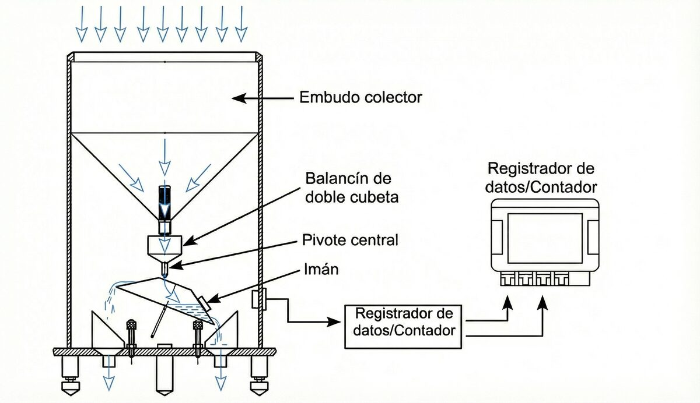
La estación hidrométrica
- Sitio: tramo recto de unas cinco veces el ancho, sin remanso.
- Control: rasgo del cauce que fija el nivel para cada caudal; un umbral de roca o un vertedero en caudales bajos.
- Limnímetro: regla que lee una persona. Limnígrafo: sensor de presión, radar o ultrasonido, cada 5 a 15 min.
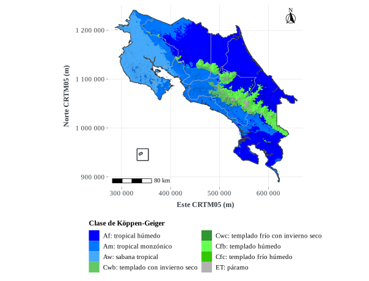
El aforo por velocidad y área
\[ Q = A\,\bar v \]
- Métodos: volumétrico, velocidad y área, dilución y acústico (ADCP).
- Velocidad media en cada vertical (Rantz et al., 1982):
- un punto a 0.6 de la profundidad si \(d < 0.75\) m;
- dos puntos, 0.2 y 0.8, promediados.
- Entre 20 y 30 verticales; ninguna franja con más del 10 % del caudal.
Sección intermedia:
\[ q_i = \bar v_i\, d_i\, \frac{b_{i+1} - b_{i-1}}{2} \]
Sección media:
\[ q_{i,i+1} = \frac{\bar v_i + \bar v_{i+1}}{2}\, \frac{d_i + d_{i+1}}{2}\, (b_{i+1} - b_i) \]
Con pocas verticales la sección media da menos caudal.
Ejemplo: aforo por sección intermedia
Río de 15.5 m, diez verticales (hipotéticos); orillas en 0 y 15.5 m.
| \(b\) (m) | 1.0 | 2.5 | 4.0 | 5.5 | 7.0 | 8.5 | 10.0 | 11.5 | 13.0 | 14.5 |
|---|---|---|---|---|---|---|---|---|---|---|
| \(d\) (m) | 0.35 | 0.70 | 0.95 | 1.20 | 1.30 | 1.25 | 1.10 | 0.85 | 0.60 | 0.30 |
| \(\bar v\) (m/s) | 0.18 | 0.42 | 0.58 | 0.71 | 0.76 | 0.74 | 0.66 | 0.52 | 0.36 | 0.15 |
Solución:
- Anchos: 1.25 m en las verticales extremas y 1.50 m en las interiores.
- En 7.0 m: \(q = 0.76 \times 1.30 \times 1.50 = 1.482\) m³/s; así con cada franja.
- \(Q = 7.63\) m³/s; con sección media, 7.48 m³/s (2 % menos).
- Cinco franjas pasan de 10 %: el aforo necesitaría unas 20 verticales. Incertidumbre del orden de ±8 % al 95 %.
La curva de descarga
\[ Q = a\,(h - h_0)^n \]
- \(h_0\): nivel de caudal nulo, el punto más bajo del control.
- Si no se puede levantar, método de Johnson con \(Q_3 = \sqrt{Q_1 Q_2}\):
\[ h_0 = \frac{h_1\, h_2 - h_3^2}{h_1 + h_2 - 2\,h_3} \]
- Con \(h_0\), la recta \(\ln Q = \ln a + n \ln(h - h_0)\) se ajusta por mínimos cuadrados.
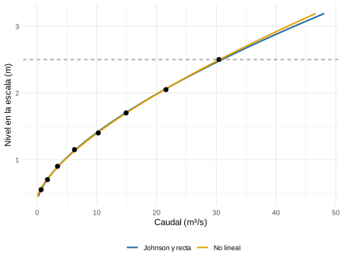
Ejemplo: curva con el nivel de caudal nulo estimado
| \(h\) (m) | 0.55 | 0.70 | 0.90 | 1.15 | 1.40 | 1.70 | 2.05 | 2.50 |
|---|---|---|---|---|---|---|---|---|
| \(Q\) (m³/s) | 0.68 | 1.74 | 3.43 | 6.27 | 10.25 | 14.90 | 21.59 | 30.44 |
Aforos hipotéticos; el control está cubierto de sedimento.
Solución:
- \(Q_1 = 1.74\) (\(h_1 = 0.70\)) y \(Q_2 = 30.44\) (\(h_2 = 2.50\)): \(Q_3 = \sqrt{1.74 \times 30.44} = 7.28\) m³/s.
- Interpolando: \(h_3 = 1.15 + 0.25 \times (7.28 - 6.27)/(10.25 - 6.27) = 1.213\) m.
- \(h_0 = (0.70 \times 2.50 - 1.213^2)/(0.70 + 2.50 - 2 \times 1.213) = 0.36\) m.
- Recta en logaritmos: \(n = 60.670/38.491 = 1.576\) y \(\ln a = 2.233\), \(a = 9.33\).
- \(Q = 9.33\,(h - 0.36)^{1.576}\); para \(h = 3.20\) m, 48.3 m³/s, fuera del rango aforado.
Explorador: el nivel de caudal nulo
Johnson da \(h_0 = 0.36\) m. Un \(h_0\) mal elegido casi no se nota en los aforos altos, pero cambia el caudal bajo y el extrapolado.
Por qué la curva se mueve
- Erosión o depósito en el control y vegetación desplazan la curva. Se confirma con un segundo aforo.
- Histéresis: en ríos de poca pendiente pasa más caudal al subir que al bajar. Corrección de Jones:
\[ Q_m = Q_c\sqrt{1 + \frac{1}{c\,S_0}\frac{dh}{dt}} \]
- En crecidas: dilución, flotadores (×0.85), LSPIV, radar o pendiente y área con las marcas de agua.
Ejemplo: la curva anterior, \(h = 1.70\) m, ancho de 18 m, \(S_0 = 0.0008\), nivel que cambia 0.30 m/h.
Solución:
- \(Q_c = 9.33 \times 1.34^{1.576} = 14.80\) m³/s.
- \(dQ/dh = 17.4\) m²/s; celeridad \(c = 17.4/18 = 0.967\) m/s.
- Término: \(8.33 \times 10^{-5}/(0.967 \times 0.0008) = 0.108\).
- Al subir, 15.6 m³/s; al bajar, 14.0 m³/s: ±5 %.
Con pendientes de 1 % el término es diez veces menor y la histéresis se ignora.
Para practicar
- Un pluviómetro de 200 mm de diámetro recoge 785 mL en un día. ¿Cuánta lluvia cayó, en mm?
- Repita el aforo del ejemplo con el método de la sección media, sumando las once franjas, y compare.
- En el aforo, ¿qué verticales agregaría para que ninguna franja pase de 10 % del caudal?
- Con los aforos del ejemplo, ajuste la curva con \(h_0 = 0.30\) m y compare el caudal para 3.20 m.
- Repita la corrección de Jones con una pendiente de 0.01 m/m. ¿Vale la pena corregir?
Más ejercicios en los capítulos 5 y 8 del libro.
Ideas para llevar
- El pluviómetro mide en un punto y con viento mide de menos; el pluviógrafo da intensidades.
- El registro de caudal sale de leer niveles y convertirlos con la curva de descarga.
- Un buen aforo tiene 20 a 30 verticales: el número de verticales pesa más que el método de cálculo.
- El nivel de caudal nulo define la parte baja de la curva y la extrapolación.
- La curva describe el cauce del día del aforo: se revisa después de cada crecida.
Referencias
Allan, J. A. (1998). Virtual water: A strategic resource. Global solutions to regional deficits. Ground Water, 36(4), 545-546.
Allen, R. G., Pereira, L. S., Raes, D., & Smith, M. (1998). Crop evapotranspiration: Guidelines for computing crop water requirements (FAO Irrigation and Drainage Paper 56). Food and Agriculture Organization of the United Nations. https://www.fao.org/4/x0490e/x0490e00.htm
Amador, J. A. (2008). The Intra-Americas Sea low-level jet: Overview and future research. Annals of the New York Academy of Sciences, 1146(1), 153-188. https://doi.org/10.1196/annals.1446.012
Aparicio, F. J. (1992). Fundamentos de hidrología de superficie. Editorial Limusa.
Beck, H. E., McVicar, T. R., Vergopolan, N., Berg, A., Lutsko, N. J., Dufour, A., Zeng, Z., Jiang, X., Dijk, A. I. J. M. van, & Miralles, D. G. (2023). High-resolution (1 km) Köppen-Geiger maps for 1901–2099 based on constrained CMIP6 projections. Scientific Data, 10, 724. https://doi.org/10.1038/s41597-023-02549-6
Centro de Investigación en Estudios para el Desarrollo Sostenible. (2025). Centro de Investigación en Estudios para el Desarrollo Sostenible (CIEDES), Universidad de Costa Rica. https://ciedes.ucr.ac.cr/
Centro de Investigaciones Geofísicas. (2025). Centro de Investigaciones Geofísicas. Universidad de Costa Rica. https://cigefi.ucr.ac.cr/
Charlton, R. (2008). Fundamentals of fluvial geomorphology. Routledge.
Chow, V. T., Maidment, D. R., & Mays, L. W. (1988). Applied hydrology. McGraw-Hill.
Comité Regional de Recursos Hidráulicos. (2008). El clima, su variabilidad y cambio climático en Costa Rica [Proyecto Segunda Comunicación sobre Cambio Climático en Costa Rica]. Instituto Meteorológico Nacional. https://cglobal.imn.ac.cr/documentos/publicaciones/CambioClimatico/climaVariabilidadCambioClimaticoCR.pdf
Escuela de Física, Universidad de Costa Rica. (2025). Escuela de Física, Universidad de Costa Rica. Universidad de Costa Rica. https://www.fisica.ucr.ac.cr/
Horton, R. E. (1945). Erosional development of streams and their drainage basins: Hydrophysical approach to quantitative morphology. Geological Society of America Bulletin, 56(3), 275-370.
Instituto Costarricense de Electricidad. (2025). Instituto Costarricense de Electricidad (ICE). https://www.grupoice.com
Instituto Geográfico Nacional. (2025). Sistema Nacional de Información Territorial (SNIT). Geoportal. https://www.snitcr.go.cr
Kopp, G., & Lean, J. L. (2011). A new, lower value of total solar irradiance: Evidence and climate significance. Geophysical Research Letters, 38(1), L01706. https://doi.org/10.1029/2010GL045777
Kottek, M., Grieser, J., Beck, C., Rudolf, B., & Rubel, F. (2006). World map of the Köppen-Geiger climate classification updated. Meteorologische Zeitschrift, 15(3), 259-263. https://doi.org/10.1127/0941-2948/2006/0130
Lawrence, M. G. (2005). The relationship between relative humidity and the dewpoint temperature in moist air: A simple conversion and applications. Bulletin of the American Meteorological Society, 86(2), 225-233. https://doi.org/10.1175/BAMS-86-2-225
Le Treut, H., Somerville, R., Cubasch, U., Ding, Y., Mauritzen, C., Mokssit, A., Peterson, T., & Prather, M. (2007). Historical overview of climate change science. En S. Solomon, D. Qin, M. Manning, et al. (Eds.), Climate Change 2007: The Physical Science Basis. Contribution of Working Group I to the Fourth Assessment Report of the Intergovernmental Panel on Climate Change (pp. 93-127). Cambridge University Press.
Leopold, L. B., & Wolman, M. G. (1957). River channel patterns: Braided, meandering, and straight (Professional Paper 282-B). U.S. Geological Survey.
Magaña, V., Amador, J. A., & Medina, S. (1999). The midsummer drought over Mexico and Central America. Journal of Climate, 12(6), 1577-1588. https://doi.org/10.1175/1520-0442(1999)012<1577:TMDOMA>2.0.CO;2
Maidment, D. R. (Ed.). (1993). Handbook of hydrology. McGraw-Hill.
Mekonnen, M. M., & Hoekstra, A. Y. (2011). The green, blue and grey water footprint of crops and derived crop products. Hydrology and Earth System Sciences, 15(5), 1577-1600. https://doi.org/10.5194/hess-15-1577-2011
Mekonnen, M. M., & Hoekstra, A. Y. (2012). A global assessment of the water footprint of farm animal products. Ecosystems, 15(3), 401-415. https://doi.org/10.1007/s10021-011-9517-8
Milly, P. C. D., Betancourt, J., Falkenmark, M., Hirsch, R. M., Kundzewicz, Z. W., Lettenmaier, D. P., & Stouffer, R. J. (2008). Stationarity is dead: Whither water management? Science, 319(5863), 573-574. https://doi.org/10.1126/science.1151915
Ministerio de Agricultura y Ganadería, & Ministerio de Ambiente y Energía. (2019). Decreto Ejecutivo N.° 41960-MAG-MINAE: Establecimiento de la metodología para la determinación de la capacidad de uso de las tierras agroecológicas de Costa Rica. https://faolex.fao.org/docs/pdf/cos220053.pdf
NOAA, NASA, & USAF. (1976). U.S. Standard Atmosphere, 1976 (NOAA-S/T 76-1562). U.S. Government Printing Office.
Orlanski, I. (1975). A rational subdivision of scales for atmospheric processes. Bulletin of the American Meteorological Society, 56(5), 527-530.
Porras Velásquez, J. P. (2025). Material de curso IC-0808 Hidrología. Escuela de Ingeniería Civil, Universidad de Costa Rica.
Rantz, S. E. et al. (1982). Measurement and computation of streamflow. U.S. Geological Survey. https://doi.org/10.3133/wsp2175
Roche, M. (1963). Hydrologie de surface. Gauthier-Villars.
Sáenz, J., González-Rojí, S. J., & Carreno-Madinabeitia, S. (2025). aiRthermo: Atmospheric Thermodynamics and Visualization. https://CRAN.R-project.org/package=aiRthermo
Serrano Pacheco, A. (2017). Notas de clase del curso IC-0808 Hidrología. Universidad de Costa Rica, Escuela de Ingeniería Civil.
Strahler, A. N. (1952). Hypsometric (area-altitude) analysis of erosional topography. Geological Society of America Bulletin, 63(11), 1117-1142.
Strahler, A. N. (1957). Quantitative analysis of watershed geomorphology. Transactions, American Geophysical Union, 38(6), 913-920.
Stull, R. (2016). Practical meteorology: An algebra-based survey of atmospheric science. University of British Columbia. https://www.eos.ubc.ca/books/Practical_Meteorology/
Taylor, A. B., & Schwarz, H. E. (1952). Unit-hydrograph lag and peak flow related to basin characteristics. Transactions, American Geophysical Union, 33(2), 235-246.
Trenberth, K. E., Dai, A., Rasmussen, R. M., & Parsons, D. B. (2003). The changing character of precipitation. Bulletin of the American Meteorological Society, 84(9), 1205-1217. https://doi.org/10.1175/BAMS-84-9-1205
University of Wyoming, Department of Atmospheric Science. (2019). Upper air soundings: estación 78762 (MROC, Aeropuerto Internacional Juan Santamaría), 12 de setiembre de 2019, 12 UTC. https://weather.uwyo.edu/upperair/sounding.html
U.S. Geological Survey. (2019). Where is Earth’s water? https://www.usgs.gov/special-topics/water-science-school/science/where-earths-water
Villalobos Herrera, R. (2025). Material de curso IC-0808 Hidrología. Escuela de Ingeniería Civil, Universidad de Costa Rica.
Wallace, J. M., & Hobbs, P. V. (2006). Atmospheric science: An introductory survey (2.ª ed.). Academic Press.
World Meteorological Organization. (2018). Guide to instruments and methods of observation (WMO-No. 8). World Meteorological Organization. https://library.wmo.int/idurl/4/41650
Hidrología Aplicada a la Ingeniería Civil